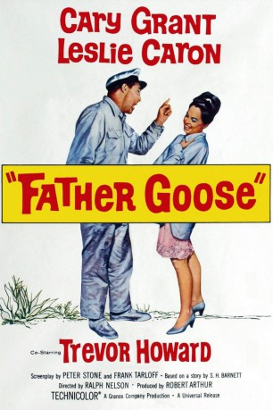

Auszeichnungen: 1 Oscars gewonnen für 2 Oscars nominiert
 gesehen am 20.11.2017
gesehen am 20.11.2017Alternativ: Father Goose
Auszeichnungen: 1 Oscars gewonnen für 2 Oscars nominiert gesehen am 20.11.2017
 
 IMDB-Wertung: 7.4 / 10
IMDB-Wertung: 7.4 / 10  Metascore:
Metascore: 
During World War II South Sea beachcomber Walter Eckland is persuaded to spy on planes passing over his island. He gets more than he bargained for as schoolteacher Catherine Frenau arrives on the run from the Japanese with her pupils in tow!
Jahr: 1964
Dauer: 116 Minuten
FSK: 12
Land: USA Studio: A Universal® PictureTonspuren:
Untertitel: Deutsch,
Auflösung: 1080p (1920x1080) Größe: 7833 MB
Genre: Komödie, Abenteuer, Krieg, Liebe
Regisseur: Ralph Nelson
Drehbuch: Peter Stone
Soundtrack:
Darsteller:
 Cary Grant als Walter
Cary Grant als Walter Leslie Caron als Catherine
Leslie Caron als Catherine Trevor Howard als Houghton
Trevor Howard als HoughtonDatei: X:\1964\Große Wolf ruft, Der (1964, FSK12, 1920x1080).mkv seit 15.10.2017
Festplatte: HD 1900-1970
 Es gibt insgesamt 22 Filme in der Gruppe '1964'
Es gibt insgesamt 22 Filme in der Gruppe '1964'